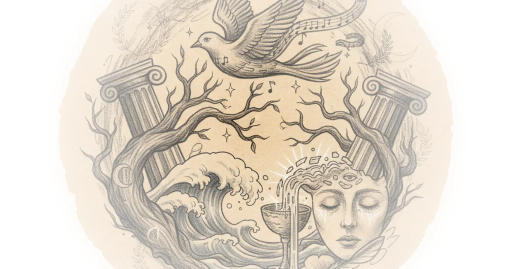

Keats's Ode to a Nightingale is a masterpiece that has captivated readers for over two centuries. The author's analysis reveals how this poem traces "the rise and fall of an imaginative flight of fancy" — a journey sparked by the beauty of the Nightingale's song.
A Sensual Escape
What makes this reading compelling is how the author identifies the poem's unique grounding. Unlike Wordsworth's Tintern Abbey rooted in a specific place, or Coleridge's "Frost at Midnight" anchored in a particular time, Keats instead grounds his work "in this drowsy sensuous experience with the beauty of The Nightingale's song." This distinction matters because it positions the poem as an exploration of sensation rather than location — a crucial interpretive shift that changes how we read every subsequent image.

The author also makes a compelling case about which senses dominate. "What predominates as the sense is not really Vision as is predominant in Wordsworth but it's really sound" — this observation reframes our entire approach to the poem. We're meant to listen, not look.
Mythology and Medical Imagery
One of the most striking aspects of this analysis concerns Keats's use of mythological allusion. The author points out how "Keats is really relying upon this institution of Illusion which goes all the way back to Greek myth" — a tradition that includes not just the Nightingale itself, but references to Hemlock (the poison that killed Socrates), Lethe (the river of forgetfulness), and Dryad (tree spirits). These aren't decorative; they're structural.
"Keats really resides within the 17th century within the 17th century dramas sometimes even the late 16th century"
This observation reveals Keats as someone deliberately working in a tradition of personification that draws from earlier drama — something evident in To Autumn where he personifies autumn "her hair half lifted on the winwinnowing winds."
The medical imagery is equally significant. The author notes how "dull opiate" and "dull brain" carry "something very physiological" — these aren't merely poetic flourishes but deliberate choices connecting the poem to bodily experience. The speaker's state mirrors something pharmacological: numb, sedated, transported.
Sound Over Sight
The analysis makes a crucial point about Keats's departure from Romantic norms. While Wordsworth and other Romantics "don't really play upon their primary senses is that of eye and ear," Keats "gets into the very textures of the real world" and "is interested in not just what can be seen or heard but what can be smelled and felt and tasted." This is a radical expansion of sensory territory — the poem doesn't merely describe flowers but their "embalmied darkness" and presence through smell.
The author observes that "I cannot see what flowers are at my feet nor what soft incense hangs upon the bowers" — this isn't vision but olfactory experience. The grass, thicket, and fruit trees aren't seen but "the presence of all of this Botanical Splendor" is acknowledged through scent rather than sight.
Death as Ecstasy
The analysis culminates in a brilliant reading of death imagery. "For many a time I have been half in love with easeful death" becomes the poem's heart — not avoidance of death but embrace. The author notes this connects to "the image of death as his quiet breath going into the air and the soul of the Nightingale being poured forth upon the winds through its song." This is Keats at his most daring: "this literally means standing stasis um out ecstasy it means to stand outside the body" — the Nightingale's song is a projection of self into the audible world, standing outside oneself in ecstasy.
Critics might note this analysis occasionally conflates Keats with his contemporaries — the reference to Wordsworth as if Keats were directly quoting him ("the fretful stir on profitable and the fever of the world hath hung upon the beatings of my heart") requires some interpretive license. The author acknowledges "Keats he knows this he's not plagiarizing this is an illusion" but the distinction between allusion and plagiarism could be sharper.
Historical Resonance
The Biblical reference to Ruth amid "the alien corn" receives excellent treatment — connecting not just to history but to "Redemptive history in a strange way," linking to Christian lineage through one of Jesus Christ's ancestors. The analysis also identifies the "magic casements" reference as potentially drawing from Tristam and Esulta, romance traditions involving magical potions.
Bottom Line
This close reading excels at identifying Keats's departures from Romantic convention — sound over sight, sensory richness over visual description, death as desired rather than feared. The analysis could push further on what makes this poem distinctly Keatsian: his fusion of classical allusion with embodied physical experience creates something beyond mere imitation. The vulnerability lies in assuming all these mythological connections are universally legible — readers unfamiliar with Greek myth might miss the depth of allusion the author so ably demonstrates.